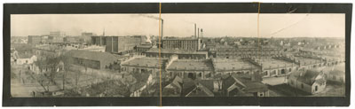

This is an archived copy of History Matters, provided by the Roy Rosenzweig Center for History and New Media. To explore this content in a new interface, visit Who Built America?.

Digital Durham
http://digitaldurham.duke.edu/
Created and maintained by Trudi Abel and the Digital Durham Project, Duke University.
Reviewed May 28July 15, 2013.
The advent of textile and tobacco manufacturing in post-Reconstruction Durham, North Carolina, wrought enormous changes upon thousands of southern families who abandoned their farms for urban wage work. Fortunately, the Web site Digital Durham offers over two hundred discrete documentssome as full text, some excerptedthat provide valuable insights into the economic, demographic, social, cultural, spatial, and political transformations that these new residents experienced across the late nineteenth and early twentieth centuries. Created in 1999 by the Digital Durham Project director Trudi Abel, the site provides K12 and postsecondary teachers, their students, and the public a relatively small but valuable set of sourcesforty-one excerpts from the James Southgate and Southgate-Jones family letters in Duke University’s special collections; eleven excerpts from the 1880 Atlas Rigsbee store ledgerbook; forty-three diverse maps (from William T. Sherman’s march through Goldsborough to segregated neighborhoods in the 1920s to voting precincts in 1975); fifty-two photographs (of buildings and portraits); excerpted gazettes, business guides, speeches, advertisements; and a searchable 1880 federal census for Durham. These materials offer multiple entry points, some more accessible than others, into Durham’s complex past, and they highlight the impact of new markets, class formations, consumer tastes, heavy-handed political maneuverings, gendered realities, and Jim Crow racism.

The site has at least three significant strengths. First, it offers K12 educators engaging primary-source material for social studies, mathematics, and computer classes, and includes three sets of lesson plans (of varying quality) geared toward meeting North Carolina state education objectives. Second, because undergraduates and graduate students prepared, photographed, and transcribed many of the documents on the site, it showcases how to involve students in civic engagement while augmenting their knowledge of local history, its broader meanings, and its applications. Finally, the site offers the kind of deep details that only discrete documents can provide about a specific place and time, making it a great crash course in the complexities of the Jim Crow South in emergent southern cities.
Although clearly organized, easily navigated, and highly searchable, the site could be made more useful with added context and information. Indeed, the rationale for the inclusion of specific sets of documents is never made clear. Links to black and white newspapers, pertinent legal documents, and the verbatim descriptions of documents pulled from Duke University’s special collections would be particularly beneficial. Population graphs and/or federal census records for the city for 1890, 1900, 1910, and 1920 would generate better opportunities for assessing change over time. Because this period and its people have inspired an impressive body of scholarly literature over the last half century, the Web site ought to provide an annotated bibliography that includes books and articles on the history of Durham and its surrounds; African American history, working-class history, and women’s history in the New South; and business and economic history in relation to southern, national, and global markets. These suggestions aside, Digital Durham is an important site that deserves ongoing development and emulation.
Michele Gillespie
Wake Forest University
Winston-Salem, North Carolina